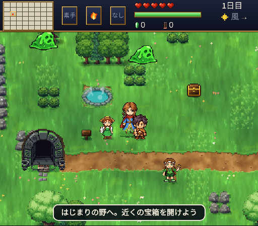

黄昏に呑まれかけた大地を、少年nonoが旅する見下ろし型のアクションアドベンチャー。剣は旅のなかで育ち、最後に「暁の聖剣」になる。
▶ ゲームをはじめる
セーブはその端末の中に自動で保存される。Safari で開いた場合とホーム画面のアイコンから開いた場合ではセーブが別々になるので、遊ぶ場所はどちらか一方に決めておく。ブラウザの閲覧データを消すとセーブも消える。新しい版は、ネットにつながっているときに開けば自動で届く。
古い伝説の大悪魔・蚩尤がよみがえり、世界の端から黄昏の霧が広がりはじめた。はじまりの野で目を覚ましたnonoは、戦うヒロインのユイと、その影に潜む女忍者レイに出会い、各地の神殿に眠る封印の宝を集める旅に出る。
道中では、十二支の獣たちをはじめ15人のライバルが立ちはだかる。勝つたびに剣が鍛えられ、ライバルたちは最終決戦に駆けつけてくれる。封印の宝を4つそろえたら、黄昏の城で蚩尤と向き合うことになる。
| 動き | キーボード | スマホ |
|---|---|---|
| 移動 | WASD または矢印 | 左の十字パッド |
| 攻撃 | J または Space | 攻撃ボタン |
| 必殺技 | 攻撃を長押しして離す | 攻撃ボタンを長押し |
| 走る／回避 | K 長押しで走る、短く押すと回避（Shift でも走る） | 走るボタン |
| 魔法 | L | 魔法ボタン |
| 道具 | U | 道具ボタン |
| 持ち替え | 1 武器 2 魔法 3 道具 | 画面上の枠をタップ |
| 地図 | M | 右上の「地図」 |
| 話す | 人に向かって少し押し続ける | 同じ |
スマホは横向きにすると、ゲーム画面が大きくなり、操作ボタンが左右に分かれる。音は最初にタップかキーを押したときから鳴る。
剣の育ち方（15段階）
本筋のほかにも、寄り道がたくさんある。どれもいつ始めてもよい。
各地方の小さな祠の奥に防具が眠っている。寒さや熱さを防ぐもの、泳ぎが速くなるもの、暗い部屋でも見えるものなど。15がそろうと1つに溶け合い「光の防具」になる。
集めた防具は地図の「装備」欄で見られる。
旅の途中で、ふいに2人が現れる。ハートを回復し、しばらくいっしょに戦ってくれる。3回会うと「箱庭の試練箱」を託される。
はじまりの村の馬小屋で馬に乗れる。天嶺の霊峰に住む風の龍を鎮めると「龍笛」がもらえ、龍の背に乗って山も海も越えて空を飛べる。
はじまりの村の西の石のアーチの奥。入るたびに形が変わる地下迷宮で、最奥は地下11〜20階。罠や拾い物、階段の番人をくぐり抜けた先に、聖剣15本と星座の宝物が眠る。
持ち込めるのは武器1本・料理3個・弓と矢10本まで。
龍に乗って、空に浮かぶ島へ。歌う石、謎かけ、夜だけの封、供物、灯り、巡り。島ごとの試練を解くと星座の宝物がもらえる。
町の行商人で釣竿を買うと、水辺で魚が釣れる。海・川・湖・沼・深海に48種。宿屋や温泉でユイに料理してもらうか、野営セットでキャンプの火をたいて料理すると、持ち歩ける回復になる。釣った種類が増えると、ペットの鳥もなつく。なついた犬は宝物庫の番犬になる。
大溪谷の坑道で「黄金のつるはし」を手に入れると、14の町の駅の技師が線路を引いてくれる。町どうしをつなぐと、魔導列車で行き来でき、毎朝特産品の交易で収入が入る。
大迷宮の最奥、交易、空の島、夜の流れ星、星の行商人、偉業の証。集めた像は宝物庫に並び、89種そろうと「星の加護」でハートが増える。
道具ボタンで開く小さな庭。ユイとレイ、そしてnonoが主役の11のミニゲームで遊べる。夜の球場でライバルを三振に取る投球や、レバーで道を作る大灯籠の組み上げもある。ライバルとの連戦もある。クリアするとユイとレイの武器が強くなり、2人の衣装、nonoの衣装・魔術書・ペットの猫と犬・グライダーの見た目がもらえる。
難しさは3段階。ランクは銅・銀・金・星。